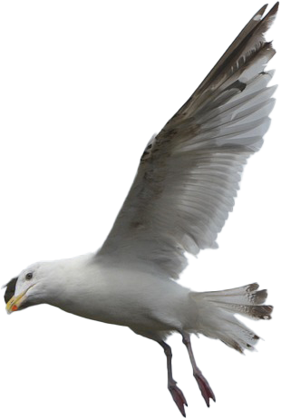
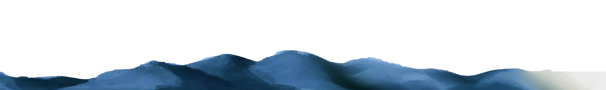
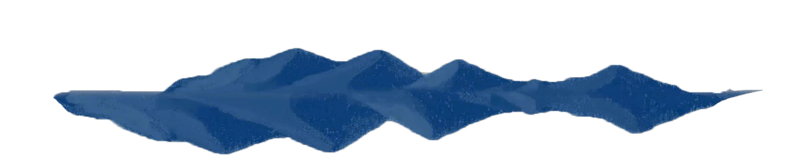
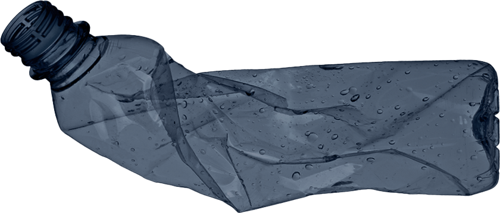
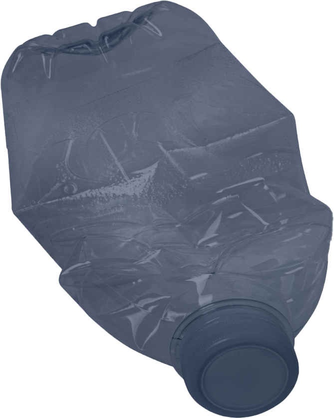
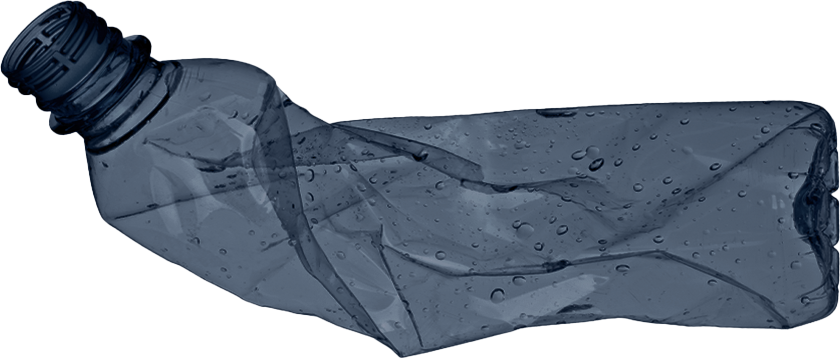
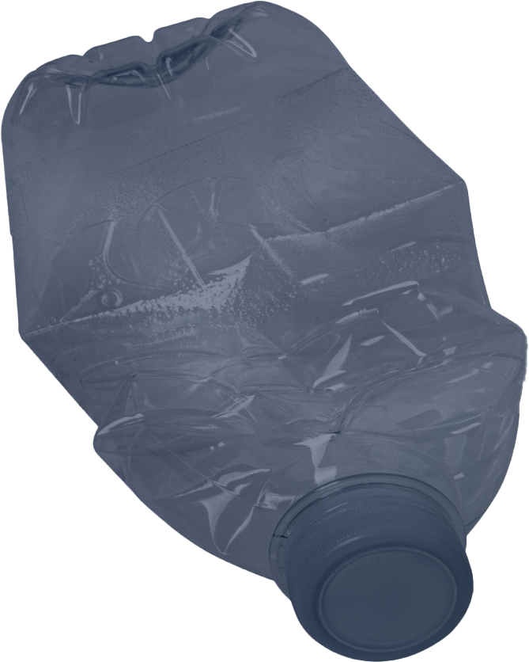
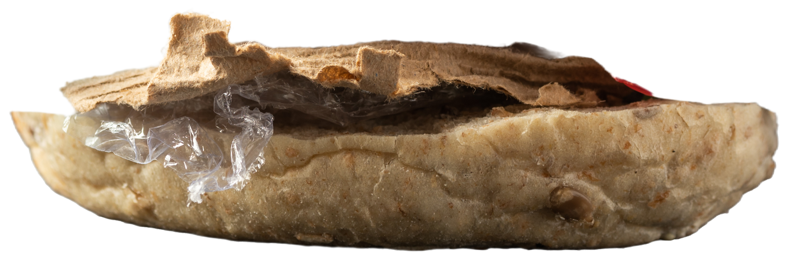
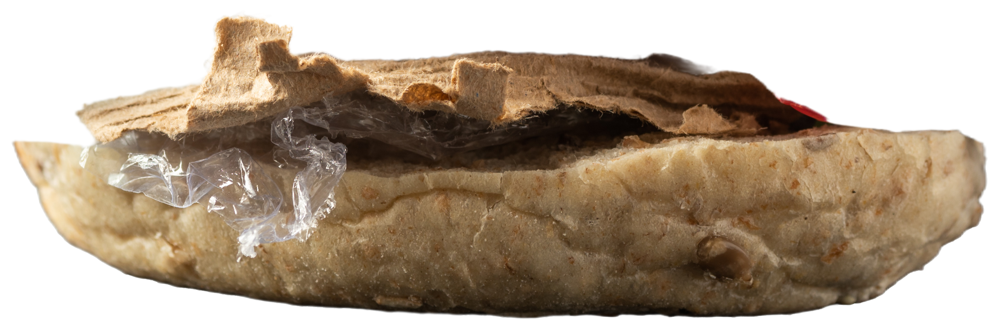

Depth: 0m
Into the Deep
DIVE IN





Depth: 0m
 



every year, millions of marine animals die from ingesting or becoming entangled in plastic waste.
sea turtles mistake plastic bags for jellyfish,
seabirds feed plastic to their chicks,
and fish ingest microplastics,
disrupting the food chain and threatening ocean ecosystems.

 

plastic pollution in the ocean doesn't just harm marine life
it comes back to us.
tiny plastic particles, known as
microplastics
are ingested by fish and shellfish, making their way up the food chain and onto
our plates.
by eating seafood, we unknowingly consume these plastics, which may carry
toxic chemicals
posing potential risks to our health.